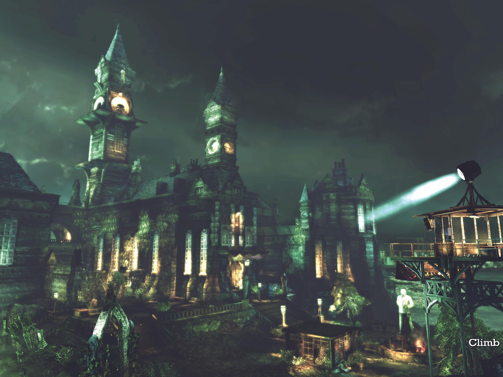

ASILO ARKHAM
Ubicado en una isla frente a la ciudad, el Arkham Asylum es probablemente uno0 de los lugares más conocidos y controvertidos de Gotham.
Fundado como institución para el tratamiento de criminales con enfermedades mentales, el asilo forma parte inseparable de la historia de la ciudad. Su arquitectura
victoriana, sus extensos terrenos y su ubicación aislada lo convierten en un lugar único. El complejo ofrece
una mirada al pasado de la ciudad y a algunas de las instituciones que han marcado el desarrollo de la ciudad. Ideal para el turismo histórico conocer la arquitectura
caracteristica de la ciudad.
Si bien en un principio el acceso a las instalaciones era limitado, la alcadía de Gotham puso en marcha un plan de incentivo econimico que permite a más personas conocer el complejo.
Para los visitantes interesados en el patrimonio más peculiar de Gotham la alcaldía vende cupos para vistas supervisadas a las instalaciones presentando documentos especificos
los recorridos suelen durar alrededor de 4 horas e incluyen visitas a los pabellones y salas más importantes del establecimiento
Aviso al visitante: debido a su historial de incidentes de seguridad, se recomienda consultar las condiciones de acceso antes de planificar una visita.
